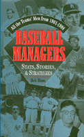

All the Teams' Men from 1901 through 1998
All the Teams' Men from 1901 through 1998


 All the Teams' Men from 1901 through 1998
All the Teams' Men from 1901 through 1998

|  |
Baseball ManagersStats, Stories, and StrategiesBob Blosscloth EAN: 978-1-56639-661-5 (ISBN: 1-56639-661-1) |
Philadelphia Book Clinic Certificate of Award, 2000
"Criticizing managers has always been a popular pastime, especially for fans. In fact, baseball's dugout directors believe that no other profession is second-guessed to the extent theirs is. More than a century's worth of evidence supports their position. However, not any of them—from McGraw to Bucky Harris to the Deacon McKechnie to feisty Billy Martin and on to today's Dusty Baker, Tom Kelly, and Bobby Cox (or even to Tom Hanks in A League of Their Own)—would forego the opportunity to manage a baseball team."
—From the Introduction
Why is baseball the only team sport whose managers wear a uniform?
Which two managers have led three different teams to the World Series?
Who was the last player-manager?
Which managers' uniform numbers have been retired?
What happened when Ted Turner took over as manager after Atlanta had posted 16 consecutive losses?
These and many more questions are answered in Bob Bloss's Baseball Managers. The perfect book to have for settling a baseball argument, it contains records of each of the more than 400 twentieth-century managers. It traces managing evolution from the original Cincinnati Red Stockings to the Arizona Diamondbacks and from the early days of player-managers and their fourteen-man squads to today's relentless fan and media second-guessing and the emergence of free agency—which now often forces managers to enter battle with teams vastly restructured from the previous season.
With chapters on controversial managerial decisions Hall-of-Fame manager profiles and oddball managerial situations, humorous and sometimes poignant anecdotes, and many useful tables listing managers alphabetically, by teams, and by winning percentages, Baseball Managers is a fascinating compilation of statistics, trivia, and memories.
Excerpt available at www.temple.edu/tempress
Acknowledgments
Introduction: Mr. Mack and Mr. Mauch
1. Managing: Its Evolution
Pathfinders
2. All the Teams' Men
3. Player-Managers: A Vanished Breed
4. Managing by Committee! Trading Managers! Managers for a Day!
5. Family Matters
6. Race and Ethnicity
7. Controversial Managerial Decisions
8. Hall of Famers
9. Measures of Greatness
10. Pennants, Playoffs, and World Series
11. Well-Deserved, Overdue Salutes
Appendix, From Adair to Zimmer: The 421 Big League Managers, 1901-1998
Index
Bob Bloss is a freelance baseball journalist who began his writing career in 1960. He has played the role of announcer as well as reporter and is a member of the Philadelphia Sports Writers Association and SABR, the Society of American Baseball Research. Once a slow, second-string high school outfielder in Erie, PA, who could hit a curve ball only when he knew it was coming—and then not very far—Bloss now chronicles baseball and baseball managing. He is also the author of Rookies of the Year (Temple).
Baseball in America, edited by Rich Westcott.
© 2015 Temple University. All Rights Reserved. This page: http://www.temple.edu/tempress/titles/1292_reg.html.